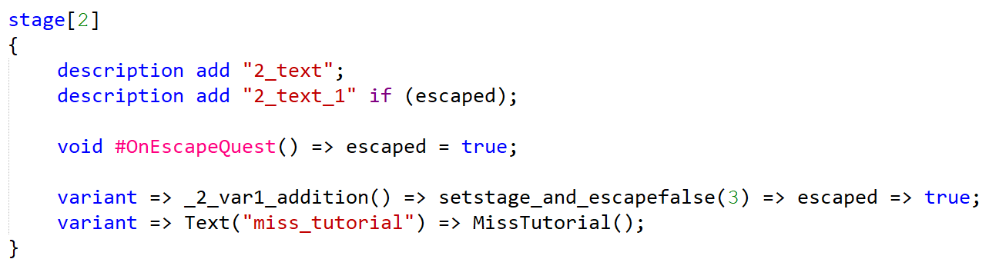

Biker Quest Script
| Biker Quest Script | |
|---|---|
|  | |
| Фрагмент кода на BQS | |
| Разработка | |
| Разработка | с декабря 2021 |
| Написан на | C# |
| Платформы | Windows |
| Статистика | |
| Строк кода | .cs: 21353 |
Biker Quest Script — C-подобный императивный скриптовый язык квестов (и не только) в Biker 3. Синтаксис очень близок к C#, что позволяет не учить целый ЯП.
- Навигация:
- Возможности и особенности
- Почему не Lua, Python и прочие
- Истоки разработки
- Возможности и фичи Biker Quest
- Спецификация
- Методы Biker 3
- Ссылки
Возможности и особенности
Ключевые:
- Интерполированные строки
- Перегрузка методов
- Многочисленные квестовые абстракции
- Описание и вызов методов, которые могут принимать и возвращать любые типы
- Вездесущность контекста и тесная связь с рефлексией
- Названия типов возвращают System.Type этого типа
Синтаксические:
- Сахарная конструкция variant =>
- Широкий набор операций, в том числе тернарная операция и расширенное присваивание
- Определение массивов через new и инициализатор массива
- Возможность явного приведения типов
- Циклы while, do-while, loop и for.
- Все операции являются утверждениями
- Каждое утверждение должно быть написано с новой строки
- Необязательная ; в конце утверждений
Прочие:
- Использование внешних .NET-библиотек. Это полезно, но в то же время опасно
- Использование любых .NET-типов и их методов
Почему не Lua, Python и прочие
Ещё с Biker 2 у меня было желание разработать скриптовый язык, не порождая зависимости от уже существующих. Кроме того, собственный язык позволяет создавать свои абстракции и свой сахар. К тому же, BQS будучи привязанным к .NET, позволяет использовать методы Biker 3, которые можно писать непосредственно на C#, не плодя дополнительный код.
Истоки разработки
Имя подсветки этого языка — bqs2. Это неспроста так, ведь до этого существовал язык Biker Quest (.bikerquest), имевший расширенный синтаксис моего старого проекта под названием Sunko, который был очередной попыткой создать свой скриптовый язык. В определённой мере он справлялся со своей задачей, но был слаборасширяем.
- sunko
- string x = {gettype {gettype {sunkoversion}}}
- !write x
- end
Biker Quest был похож на Sunko внутренним представлением и синтаксисом. Методы также, как и в Sunko, могли создаваться только вручную в коде и вызывались с помощью синтаксиса {MethodName arg1 arg2}. Это легко парсить. Но, понятное дело, писать на нём было крайне неудобно (лично я за два года существования этого языка так к нему и не привык).
- variant["0004", true] if ({money} >= QuestName.price)
- setstage 2
- setstage "QuestName" 2
- REPUTATION = (REPUTATION + 1)
- //declarations:
- var x1: int64
- var x2: int64 = start_date
- var x3 = start_date
- //assign:
- x1 = 0
- x2 += 1
- x3 -= 1
- if (true) then [setstage 1]
- if (true) then [setstage 1] else [setstage 2]
- if (true) then
- begin
- end
- else
- begin
- end
- while (true)
- begin
- end
- begin
- end
- repeat until (true)
- loop 100
- end
- end. //Здесь end и end. это разные вещи
Возможности и фичи Biker Quest (по сравнению с Sunko):
- Include-шаблоны кода (template)
- Слабочитаемый синтаксис квестовых абстракций (quest, text, stage, variant)
- Глобальные константы и переменные
- Однострочные условные конструкции
- Иной цикл for. Выглядел так: for [var x = 0] while (x < 10) do [x += 1]
- Возможность вызывать описанные вручную в дереве методы. Описывать их было нереальной болью.
Паскалеподобный синтаксис смешанный с костылями для упрощения парсинга делал из этого языка этакого франкенштейна. Кроме того, синтаксис был захламлён кучей специальных ключевых слов вроде "setstage". Последней же каплей для меня стало то, что контекст pastetemplate было невозможно восстановить вообще и в конце декабря 2021 я решил полностью переписать Biker Quest. Так появился Biker Quest Script.
Спецификация
Подсветка сгенерирована с помощью рефлексии по BQS-конструкциям. Такой код подходит только для поверхностного ознакомления. Для подробного изучения скачайте RAW-версию кода.
- //Парсер языка однострочный. Одна строка - один оператор.
- //Комментарии только однострочные
- //У языка огромная схожесть с языком C#
- class ClassName
- {
- //Классы условны. В языке нет ООП вообще. В языке даже структур нет!
- //Но если очень хочется можно написать свою C#-библиотеку и подключить её
- //Значение константы хранится в дереве.
- const int maxprice = 300
- //Значение переменной хранится в сохранении. При доступе к переменной вне контекста игры, она вернёт своё значение по умолчанию.
- //переменные должны всегда быть сериализумого типа
- //в качестве значения может использоваться вызов любых значений, для которых не нужен контекст игры
- //в том числе вызов метода в том случае если для него не нужен контекст игры.
- var int price = 200
- //Метод. Ключевое отличие от старого языка квестов. Строгости в обязательности возвращения значений нет.
- //Возвращаемый тип может быть любой абсолютно. Внутренне void это object, имейте это ввиду.
- void Method()
- {
- //Объявление переменной
- //Точка с запятой в конце оператора не обязательна
- var x = 0
- //Также переменная объявляется при присваивании, если её не существует:
- xx = 0
- //Однако не стоит использовать эту возможность без необходимости.
- {
- //Объявленные переменные пропадают после конца области действия их объявления
- //Если они заменили переменную, то она не вернётся назад!
- var x = 0
- var xx = 0
- }
- //Теперь обеих этих переменных не существует.
- //Присваивание переменных:
- x = 1
- //Расширенное присваивание:
- x += 1
- x -= 1
- x *= 1
- x /= 1
- x %= 1
- x |= 1
- x &= 1
- x ^= 1
- //Операций инкремента и декремента нет. Используйте += для ++x.
- //Все операции являются утверждениеями, а значит их можно писать просто так:
- 1 + 2
- //Каждая операция имеет свой приоритет (даже - над +). Имейте это ввиду.
- //Порядок приоритета по возрастанию:
- //"=", "+=", "-=", "*=", "/=", "%=", "&=", "|=", "^=", "&&", "||", "&", "|", "^",
- //"is", "==", "!=", ">", ">=", "<", "<=", ">>", "<<", "+", "-", "*", "/", "%", "!", "~"
- //Операции составляются из отдельных символов, так что a + = 1 страктуется как a += 1!
- //Тернарная операция имеет минимальный приоритет
- //Выражения имеют возвращаемый тип. Требуемы возвращаемый тип зависит от конструкции.
- #Debug.Log(1)
- var a1 = x + x
- var b1 = 0.1 + a1
- var c1 = (long )x
- if (a1 is int )
- {
- var b = a is int a1
- #Debug.Log(a is int )
- }
- //Старайтесь не переопределять существующие в контексте переменные. Если вы измените глубину их объявления, вы можете запутать самих себя.
- //Операторы:
- //Блок:
- {
- }
- //Цикл while:
- while (false)
- {
- }
- //Или краткая версия:
- while (false)null
- //Цикл do-while:
- do
- {
- }
- while (false)
- //Краткой версии не существует
- //Цикл loop:
- loop (1)
- {
- }
- //Краткая версия:
- loop (1)null
- //Цикл for:
- //for ([<Statement>]; [<Expression>]; [<Statement>]) [<Statement>];
- for (var i = 0 ; i < 1 ; i += 1)
- {
- continue
- break
- for ( ; )null
- }
- //Условный оператор (краткие версии):
- if (true)Log.Add(1)
- //else if отдельная конструкция
- else if (true)Log.Add(2)
- else Log.Add(0)
- //Несколько операторов на одной строке:
- var a = 0 ; var b = 0
- //Доступны во всех операторах (но недоступны как возвращающее значение краткого метода)
- while (a + b < 4)a += 1 ; b += 1
- //Интерполированные строки:
- string s = "{a} {b}" ; #Debug.Log(s)
- //Имена типа возвращают экземпляр System.Type
- var t = string
- //Обращаться к .NET-типам можно через ##
- //Массивы и их инициализаторы
- var a = new System.Type[1](string)
- {
- //Использование .NET-типов:
- #Type.Load(#Type.ConsoleColor)
- //или: (первое будет быстрее)
- #Type.Load(##System.ConsoleColor )
- #Debug.Log(#ConsoleColor.Black)
- //#Type хранит полные имена типов в значених константы с которотким именем
- //Ознакомьтесь со списком встроенных в Biker Quest Script методов
- //Типы существуют до конца области действия, как и переменные.
- }
- //Чтобы можно было загружать типы из других сборок, необходимо загрузить эту .NET-сборку
- #BQS.LoadAssembly("KTXCore.dll")
- }
- //Короткая запись метода:
- //<TypeName> <FuncName>() => <Expression>;
- //void <FuncName>() => <Statement>;
- int func_() => 1
- }
- quest QuestName
- {
- title = "Title {(1+1)}"
- //access - Text(string key);
- text
- {
- "desc1" = "Описание квеста в дневнике"
- "desc2" = "Описание квеста появляющееся если выполнено условие"
- }
- description
- {
- add "desc1"
- add "desc2"if (true)
- }
- //Возвращает true если в этом контексте можно начать печать квеста
- //ui[<Place>] вернёт true только в случае совпадения с именем места. При любом другом значении вернёт false
- //Удобно делать условия вроде a == 0 ? ui["All"] : ui["PlayerViewer"]
- bool #UIStart(object ui) => ui["All"]
- //Специальный метод. Вызывается при #Stage.NS (в состоянии неначатости квеста).
- //Возвращает, можно ли начать выполнение квеста
- bool #Available()
- {
- return true
- }
- //Специальный метод. Вызывается при первом запуске квеста если #Available вернуло true.
- void #Start()
- {
- $Stage = 1
- }
- stage [1]
- {
- //Special methods not access in
- bool #UIStart(object ui) => ui["All"]
- //Planned sugar:
- //uistart => "All" || "All";
- //to : bool #UIStart(object sugar<ui>) => sugar<ui>["All"] || sugar<ui>["All"];
- bool #Available() => true
- description
- {
- add "Текст этой стадии"
- add "Текст этой стадии при выполнении условия"if (true)
- }
- variant
- {
- string #GetVariantText() => "Текст этого варианта"
- void #Action() => return
- bool #Available() => false
- bool #Visible() => false
- }
- //Сахарная сокращённая запись:
- //variant => <Expression> => <Statement>[ => <Expression>[ => <Expression>]];
- //порядок => #GetVariantText => #Action => #Available => #Visible
- variant => "Текст этого варианта" => null ; => false => false
- }
- }
Хочу ещё добавить, что в спецификации описаны не все нюансы. К примеру, у перегрузки методов есть ограничения: будет выбран первый подходящий метод по порядку. То есть, если у нас есть, например, классы Item и BikeDetail : Item, и описать методы:
- void p(##Gameplay.Items.Item item) => return;
- void p(##Gameplay.Items.BikeDetails.BikeDetail bd) => return;
Ещё одно важное понятие — вызов экземплярных методов .NET-классов. В BQS нет объектов как таковых и все экземплярные методы могут быть вызваны только как статические с дополнительным первым аргументом. Например #Object.ToString(o); Если метод виртуальный и вы думаете какой конкретно класс использовать для вызова — используйте базовый.
Методы Biker 3
- class #Player
- {
- /// Добавляет exp опыта игроку
- void AddExp(int exp)
- /// Добавляет процент от размера шкалы опыта игроку
- void AddExp(double percent)
- }
- class #Debug
- {
- /// Добавляет строку в файл ktxcore.log
- independent void Log(string s)
- /// Добавляет строковое представление объекта в файл ktxcore.log
- independent void Log(object o)
- }
- class #Array
- {
- /// Возвращает длину любого массива
- independent int get_Length(object [] a)
- /// Создаёт массив объектов из count элементов типа type
- independent ##System.Array Of(string type , int count)
- /// Создаёт массив объектов из count элементов типа type
- independent ##System.Array Of(##System.Type type , int count)
- }
- class #Tuple
- {
- /// Возвращает первый элемент кортежа
- independent object Item1(##System.Runtime.CompilerServices.ITuple tuple)
- /// Возвращает второй элемент кортежа
- independent object Item2(##System.Runtime.CompilerServices.ITuple tuple)
- /// Возвращает третий элемент кортежа
- independent object Item3(##System.Runtime.CompilerServices.ITuple tuple)
- /// Возвращает четвёртый элемент кортежа
- independent object Item4(##System.Runtime.CompilerServices.ITuple tuple)
- /// Возвращает пятый элемент кортежа
- independent object Item5(##System.Runtime.CompilerServices.ITuple tuple)
- /// Возвращает шестой элемент кортежа
- independent object Item6(##System.Runtime.CompilerServices.ITuple tuple)
- /// Возвращает седьмой элемент кортежа
- independent object Item7(##System.Runtime.CompilerServices.ITuple tuple)
- /// Создаёт кортеж из одного элемента
- independent ##System.Tuple < object > Pack(object o1)
- /// Создаёт кортеж из двух элементов
- independent ##System.Tuple < object , object > Pack(object o1 , object o2)
- /// Создаёт кортеж из трёх элементов
- independent ##System.Tuple < object , object , object > Pack(object o1 , object o2 , object o3)
- /// Создаёт кортеж из четырёх элементов
- independent ##System.Tuple < object , object , object , object > Pack(object o1 , object o2 , object o3 , object o4)
- /// Создаёт кортеж из пяти элементов
- independent ##System.Tuple < object , object , object , object , object > Pack(object o1 , object o2 , object o3 , object o4 , object o5)
- /// Создаёт кортеж из шести элементов
- independent ##System.Tuple < object , object , object , object , object , object > Pack(object o1 , object o2 , object o3 , object o4 , object o5 , object o6)
- /// Создаёт кортеж из семи элементов
- independent ##System.Tuple < object , object , object , object , object , object , object > Pack(object o1 , object o2 , object o3 , object o4 , object o5 , object o6 , object o7)
- /// Распаковывает элементы кортежа в lvalue лексемы.
- void Unpack(##System.Tuple < object > tuple , lexem nl1)
- /// Распаковывает элементы кортежа в lvalue лексемы.
- void Unpack(##System.Tuple < object , object > tuple , lexem nl1 , lexem nl2)
- /// Распаковывает элементы кортежа в lvalue лексемы.
- void Unpack(##System.Tuple < object , object , object > tuple , lexem nl1 , lexem nl2 , lexem nl3)
- /// Распаковывает элементы кортежа в lvalue лексемы.
- void Unpack(##System.Tuple < object , object , object , object > tuple , lexem nl1 , lexem nl2 , lexem nl3 , lexem nl4)
- /// Распаковывает элементы кортежа в lvalue лексемы.
- void Unpack(##System.Tuple < object , object , object , object , object > tuple , lexem nl1 , lexem nl2 , lexem nl3 , lexem nl4 , lexem nl5)
- /// Распаковывает элементы кортежа в lvalue лексемы.
- void Unpack(##System.Tuple < object , object , object , object , object , object > tuple , lexem nl1 , lexem nl2 , lexem nl3 , lexem nl4 , lexem nl5 , lexem nl6)
- /// Распаковывает элементы кортежа в lvalue лексемы.
- void Unpack(##System.Tuple < object , object , object , object , object , object , object > tuple , lexem nl1 , lexem nl2 , lexem nl3 , lexem nl4 , lexem nl5 , lexem nl6 , lexem nl7)
- }
- class #BQS
- {
- /// Возвращает версию ревизии игры
- independent int GetVersion()
- /// Загружает внешнюю сборку в BQS
- independent void LoadAssembly(string s)
- /// Возвращает значение определяющее существование метода
- bool MethodAvailable(string methodname)
- /// Запускает блок KTXCore исходя из текущего контекста
- void StartUI(##KTXCore.Block ui)
- }
- class #Type
- {
- /// Возвращает тип с заданным именем
- independent ##System.Type Typeof(string name)
- /// Загружает все типы из подключенных сборок в контекст выполнения
- void LoadAll()
- /// Загружает все типы из этого пространства имён в контекст выполнения
- void LoadAll(string ns)
- /// Загружает тип в контекст выполнения, где он будет иметь имя name
- void LoadAs(string typename , string name)
- /// Загружает тип в контекст выполнения, где он будет иметь имя name
- void LoadAs(##System.Type type , string name)
- /// Загружает тип в контекст выполнения. Имена загруженных типов начинаются с #
- void Load(string typename)
- /// Загружает тип в контекст выполнения
- void Load(##System.Type type)
- }
- class #Global
- {
- /// Возвращает значение, определяющее статус обучения для новых игр
- independent bool TutorialEnabled()
- }